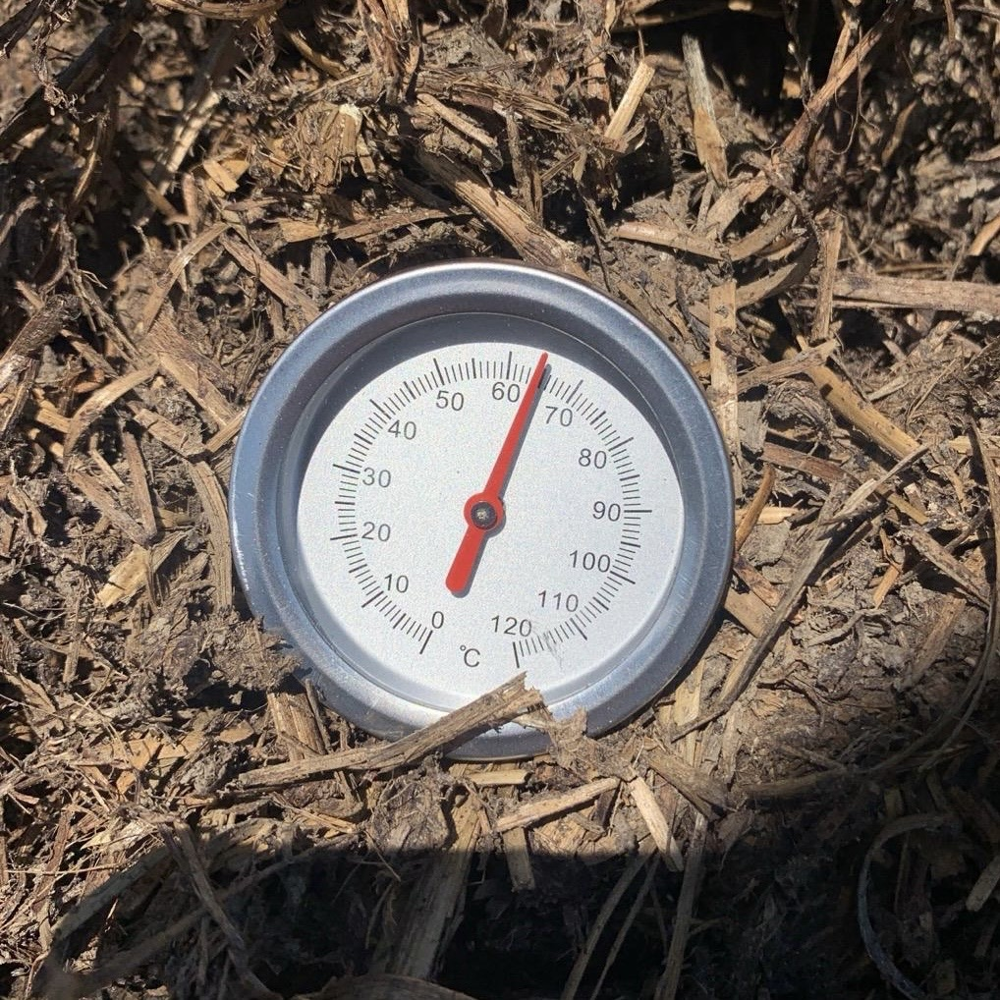
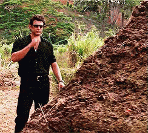
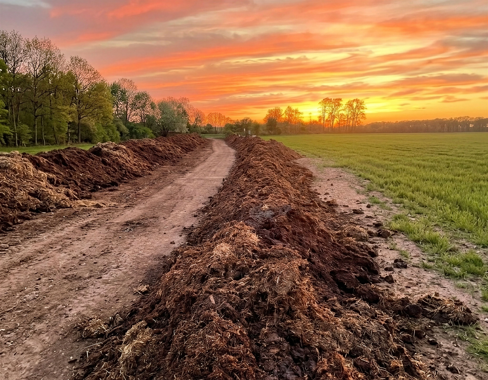

„Tavasszal vettem 5 m³-t."
Nagy Péter
Márciusban hoztam. Szétszórtam mindenhol, a paradicsomok alá, a fák tövébe, a magaságyásokba. Augusztusra a fél utca rákérdezett, hogy mit csinálok. Hát ezt. Jövőre megint.
„Tényleg trágyából lesz a legjobb komposzt?"
Igen bestie. Pontosan abból.
Értem, elsőre kicsit sus. De hallgass meg.
Az emberiség több ezer éve ezt csinálja. Ezzel javították a földet a rómaiak, a középkori parasztok, és ezzel dolgozott a nagyapám is. heritage core
A régi módszer ma is működik. Csak idő kell hozzá. Meg pár olyan dolog, amit a legtöbb zsákos komposztból kihagynak. (skill issue.)
Mindjárt odaérünk. De előbb nézzük meg, mi történik egy komposztkupacban, ha tényleg cook-ol minden.

Egy jó komposzt induló szén–nitrogén aránya nagyjából 25–30:1. Emberi nyelven: minden rész nitrogén mellé kb. harminc rész szén kell. Ha túl sok a nitrogén → ammóniaszagú lesz a kupac (L), és pont a legértékesebb tápanyag illan el. Ha túl sok a szén → a bomlás lelassul, a mikrobák pedig éheznek. balance, bestie.
A nitrogént az állatok (trágya, vizelet) adják, a szenet a növények. clean division of labor.

Ez a másik nagy különbség. Ne ugord át bestie, mert fontos.
A legtöbb kereskedelmi komposzt iparszerű állattartásból származik. Olyan hizlalótelepekről, ahol a marhák betonon állnak, antibiotikumot kapnak, és kukoricaalapú takarmányt esznek. A trágyájuk is ilyen lesz. literally Ohio
Az állat azt szarja, amit eszik. Aki ezt elfelejti, annak jár a Nobel-díj.
A mi angus és wagyu marháink a saját legelőinken nőnek fel. Füvet esznek. Ha be kell fejezni a hizlalást, saját bio gabonát kapnak. Antibiotikum: nincs. Hormon: nincs. GMO: nincs. clean lifestyle fr.
A dorper és racka anyajuhok és a bárányaik ugyanezeken a legelőkön járnak, váltott területeken. A csirkék (évszaktól függően 50–150 darab) szabadon mozognak a marhák és juhok között, és felcsipegetik, ami marad. main character squad.
Az egész körforgásban működik. A jószág trágyáz → a fű nő → a jószág legel → a maradék komposzttá érik → a komposzt visszakerül a földbe. Minden területünk bio-tanúsított. deadass.
Ezért nem ugyanaz a komposzt, mint ami egy ipari hizlalótelepről jön. Más a trágya. Más a fű. Más a benne lévő élet. Más a végeredmény. periodt.

Fél éven át érlelt istállótrágya-komposzt a mezőtúri családi gazdaságunkból. Bio-tanúsított legelőkről, antibiotikum- és GMO-mentes kacsáktól és marháktól. Szabad ég alatt, rendszeresen forgatva. handmade with love bestie.
Amit kapsz:
Heads up: később vermikomposztot is árulunk majd — a gilisztákkal készített, prémium változat. Ha érdekel, iratkozz fel, és elsőként szólunk. drop incoming 👀
Ár:
19.000 Ft / m³
Jelenleg m³-ben tudunk csak adni. zsák & big bag back in stock soon 👀
A vevőink véleményei. Nem kozmetikázzuk őket, nem cap, nem rizz.
Nagy Péter
Márciusban hoztam. Szétszórtam mindenhol, a paradicsomok alá, a fák tövébe, a magaságyásokba. Augusztusra a fél utca rákérdezett, hogy mit csinálok. Hát ezt. Jövőre megint.
Tóth László
Nem szoktam véleményt írni, most kivételt teszek. Komolyan ajánlom mindenkinek. Több ismerősömnek is jeleztem már.
Szabó Margit
Hogy is kezdjem. Nálunk a hátsó kertet régen elhanyagoltuk, a férjem már nem győzte, én meg fájós térddel csak ágyásonként kapálok. Tavaly aztán a lányom hozott egy fél köbméternyit ebből a komposztból, mondtam, jó, megpróbáljuk, ha már itt van. Először csak a paradicsom alá tettem, aztán a paprika, meg a fűszerek az ablak alatt, kapor, petrezselyem, ilyenek. Hát a paradicsom úgy nőtt, mintha verseny lett volna. A Karcsiéké mellett is, akik a múlt héten átjöttek és csak néztek. Még az ősszel vettem nekik is egy zsákot ajándékba, mert hát szomszédok között azért fontos az ilyesmi. Az unokám most már naponta jön ki paradicsomot szedni, eddig sose csinálta, mondta, hogy csípik a méhek, vagy mit tudom én, most meg nem zavarja semmi. Szóval ennyi. Köszi még egyszer.
📍 5400 Mezőtúr, Felsőrészinyomás 105. | 📞 +36 39 4596 9764